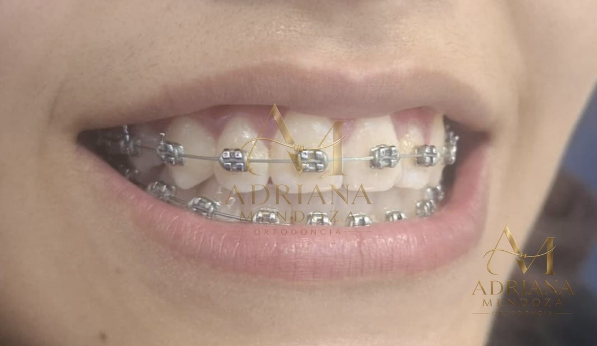

EFICACIA COMPROBADA
Brackets Metálicos
La aparatología metálica convencional y de autoligado continúa siendo el método de máxima solidez biomecánica para casos complejos, discrepancias óseas severas y maloclusiones tridimensionales. Su diseño actual es significativamente más compacto y suave que en el pasado.
- ✓ Máxima resistencia mecánica: Sin riesgo de rotura de piezas ante fuerzas intensas o hábitos masticatorios específicos.
- ✓ Control ortodóncico absoluto: Movimientos de traslación, cierre de espacios severos y nivelación de la arcada con total predictibilidad.
- ✓ Excelente relación de eficacia: Solución versátil y altamente contrastada en la literatura médica internacional.
